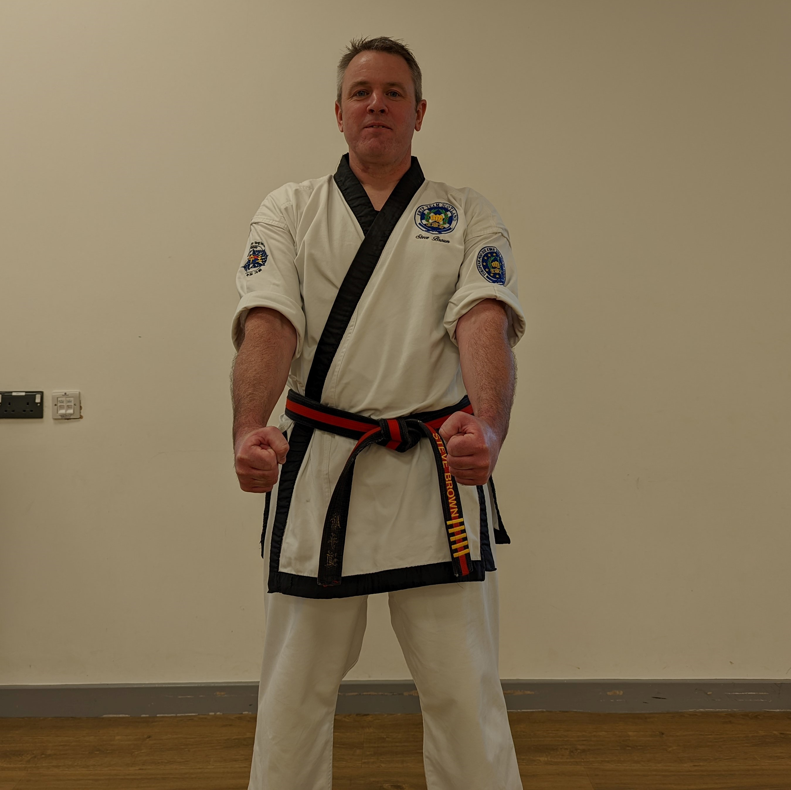
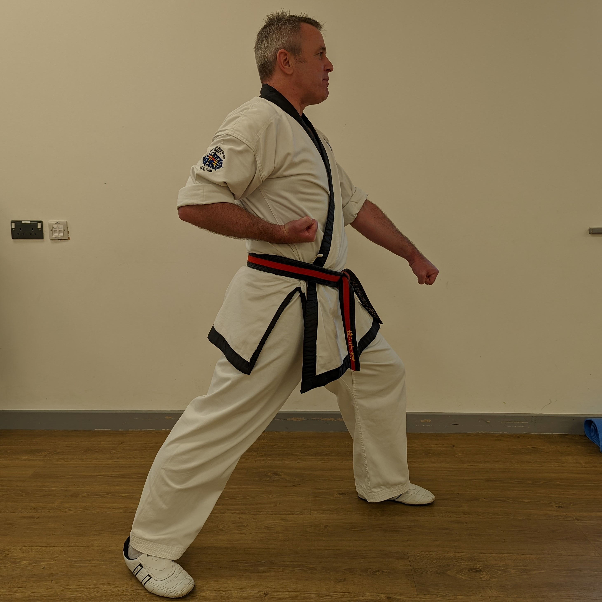
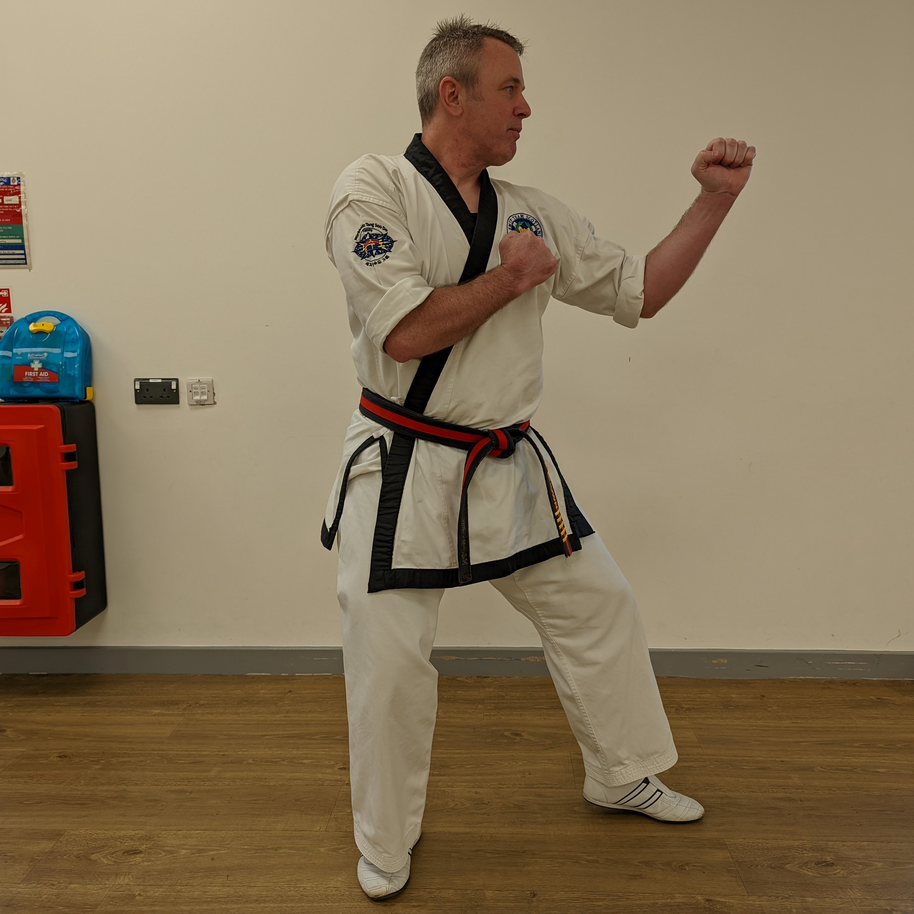
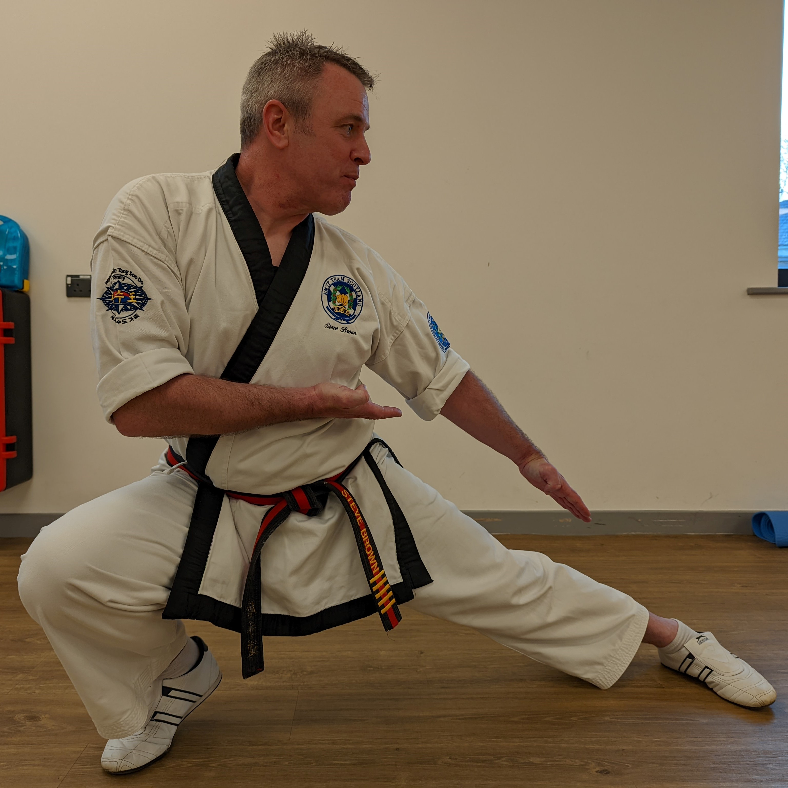
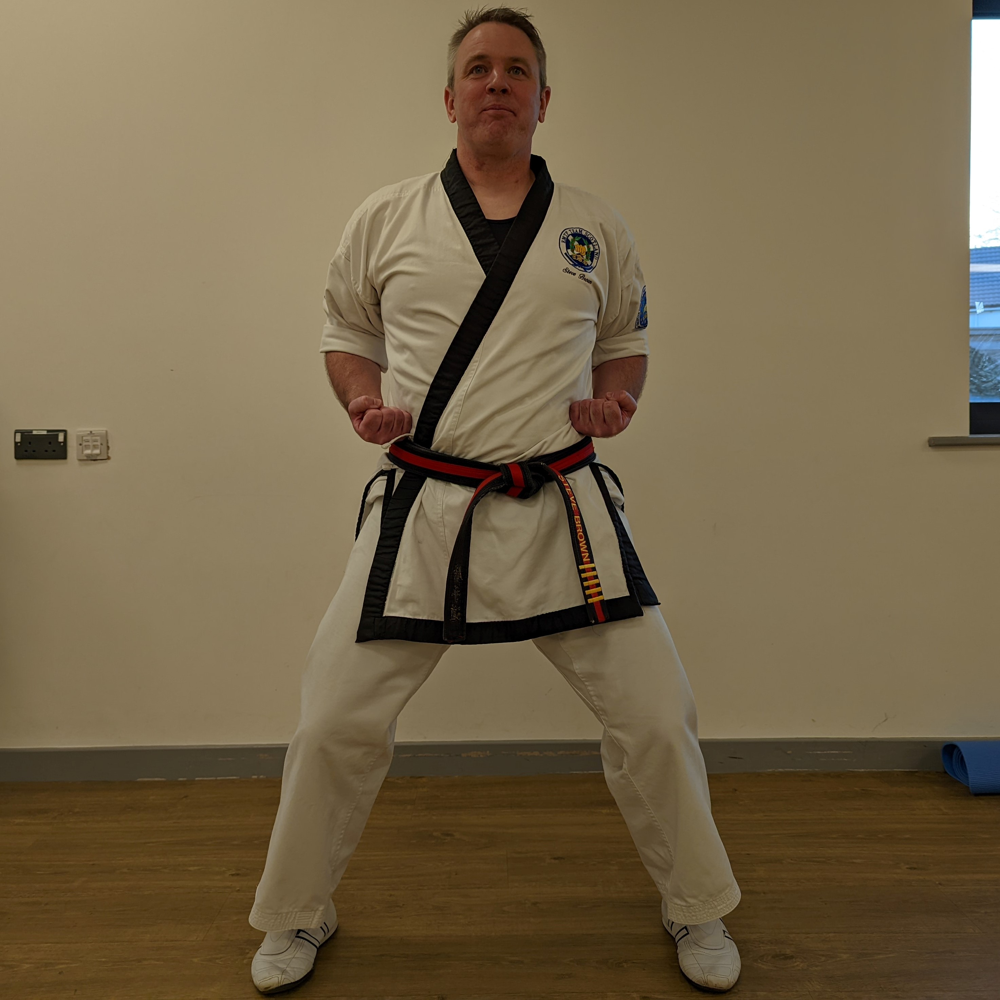

General terminology
| Korean | English |
|---|---|
| Tang Soo Do | Name of the art that we study |
| Soo Bahk Do | Ancient name of the martial art in Korea |
| Kwan Chang Nim | Grand Master |
| Sa Bom Nim | Qualified instructor |
| Nim | A term of respect (like "sir") |
| Dan | Degree, holder of blue belt or higher |
| Gup | Grade, holder of colour belt below blue |
| Ko Dan Ja | Senior Dan holder |
| Yo Dan Ja | Dan holder |
| Yo Gup Ja | Gup holder |
| Dojang | Training hall |
| Dobock | Training uniform |
| Dee | Belt |
| Ki Cho | Basic |
| Hyung | Form |
| Dae Ryun | Sparring |
| Ho Sin Sul | Self-defence |
| Kyok Pa | Breaking techniques |
| Soo Kee | Hand techniques |
| O Rin Jok | Right |
| Wen Jok | Left |
Basic stances
| Korean | English | Image |
|---|---|---|
| Joon Bee Jase | Ready stance |  |
| Chon Gul Jase | Front stance |  |
| Hu Gul Jase | Back stance |  |
| Chwe Ha Dan Jase | Low back stance |  |
| Kee Mahk Jase | Horse riding stance |  |
| Sa Go Rip Jase | Side stance | |
Commands during training
| Korean | English |
|---|---|
| Cha Ryut | Attention |
| Kyung Yet | Bow |
| Joon Bee | Ready |
| Shi-Jak | Begin |
| Ba Ro | Stop/return |
| Ku Ryung | Count |
| Ku Ryung Ae Mat Cho So | By the count |
| Ku Ryung Up Shi | Without count |
| Tora | Turn |
| Dwi Ro Tora | Prepare to turn |
| Bal Cha Kee Joon Bee | Ready for kick |
Numbers
| Korean | English | Korean | English |
|---|---|---|---|
| Ha-na | 1 | Il | 1st |
| Tul | 2 | Ee | 2nd |
| Set | 3 | Sam | 3rd |
| Net | 4 | Sah | 4th |
| Ta-sot | 5 | Oh | 5th |
| Ya-sot | 6 | Yuk | 6th |
| Il-gop | 7 | Chil | 7th |
| Yo-dol | 8 | Pal | 8th |
| A-hop | 9 | Ku | 9th |
| Yol | 10 | Ship | 10th |
Hand techniques (basic)
| Korean | English |
|---|---|
| Ha Dan Mahk Kee | Low block |
| Sang Dan Mahk Kee | High block |
| Ahn Ye Seo Bahk Euro Mahk Kee | Inside-to-outside block |
| Bahk Ye Seo Ahn Euro Mahk Kee | Outside-to-inside block |
| Tro Ahn Ye Seo Bahk Euro Mahk Kee | Reverse inside-to-outside block |
| Tro Bahk Ye Seo Ahn Euro Mahk Kee | Reverse outside-to-inside block |
| Sang Soo Joong Dan Mahk Kee | Two fist middle block |
| Sang Soo Ha Dan Mahk Kee | Two fist low block |
| Sang Soo Sang Dan Mahk Kee | Two fist high block |
| Soo Do Ha Dan Mahk Kee | Low chop |
| Soo Do Joong Dan Mahk Kee | Centre chop |
| Soo Do Sang Dan Mahk Kee | High chop |
| Joong Dan Kong Kyuk | Centre punch |
| Sang Dan Kong Kyuk | High punch |
| Hoeng Jin Kong Kyuk | Side punch |
| Yuk Jin Kong Kyuk | Reverse punch |
| Kwan Soo Kong Kyuk | Spear hand |
| Pal Koop Kong Kyuk | Elbow |
Hand techniques (advanced)
| Korean | English |
|---|---|
| Kwon Do | Knife fist |
| Joong Kwon | Forefirst |
| Kap Kwon | Backfist |
| Il Ji Kwon | One finger fist |
| Yoo Kwon | Soft fist |
| Jip Kye Shon | Plier hand |
| Yuk Soo Do | Ridge hand |
| Il Ji Kwan Soo | One finger spear hand |
| Ee Ji Kwan Soo | Two finger spear hand |
| Jang Kwon | Heel of hand |
| Son Mok Deung | Upper wrist technique |
Leg techniques
| Korean | English |
|---|---|
| Ap Cha Kee | Front kick |
| Ap Podo Cha Kee | Front snap kick |
| Ap Mee Ro Cha Kee | Front pushing kick |
| Yup Cha Kee | Side kick |
| Yup Podo Cha Kee | Side snap kick |
| Dull Ryo Cha Kee | Roundhouse kick |
| Dwee Cha Kee | Back kick |
| Ahn Ye Seo Bahk Euro Cha Kee | Inside-to-outside kick |
| Bahk Ye Seo Ahn Euro Cha Kee | Outside-to-inside kick |
| Yup Hu Ri Cha Kee | Hook kick |
| Moo Roop Cha Kee | Knee |
| Bit Cha Kee | Diagonal kick |
| Dwi... | Prefix meaning spinning |
| Deya... | Prefix meaning jumping |
| E-dan... | Prefix meaning skipping |